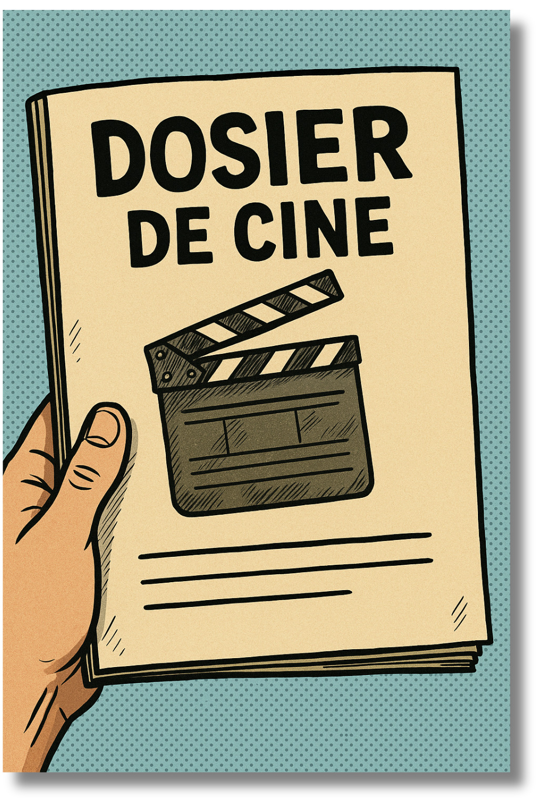

El dosier es la carta de presentación de una película. En él se recoge toda la información esencial del proyecto: la sinopsis, los objetivos, la justificación, las fases de producción, el equipo y los valores que transmite. Más allá de ser un documento técnico, es una herramienta de comunicación que explica por qué esta historia merece ser contada y cómo se llevará a cabo. En La Herradura, el dosier se convierte en el puente entre la idea y la realidad, mostrando que detrás de la suerte siempre hay un gran trabajo de planificación, esfuerzo y creatividad colectiva.

Elaboración con IA por alumnado del IES Mare Nostrum. Dosier de película (CC BY-SA)
¿Sabías qué?
El dosier en el cine CURIOSIDAD 1
El dosier es como el “currículum” de la película: sin él, muchas películas nunca llegarían a rodarse porque sirve para convencer a productores, festivales o televisiones.
Y una curiosidad final: algunos directores añaden en el dosier objetos reales relacionados con la película (una foto, un dibujo, incluso una carta del protagonista) para hacerlo inolvidable.
El dosier en el cine CURIOSIDAD 2
En algunos festivales, los jurados leen antes el dosier que ver la película, para saber si la propuesta tiene coherencia y merece atención.
El dosier en el cine CURIOSIDAD 3
El apartado visual es clave: un buen dosier no solo explica, también seduce con imágenes, colores y tipografías que transmiten el tono de la película.
El dosier en el cine CURIOSIDAD 4
El dosier también incluye a veces comparaciones con otras películas conocidas (“nuestro proyecto es como Billy Elliot pero en un instituto actual”), para que sea más fácil imaginarla.
El dosier de LA HERRADURA
El dosier del cortometraje La Herradura se presenta como la carta de presentación del proyecto, enmarcado en el programa CIMA del IES Mare Nostrum. Este programa potencia la alfabetización audiovisual escolar mediante tres líneas de acción clave: ver cine, hacer cine y alfabetización mediática, invitando al alumnado a comprender el lenguaje audiovisual, crear y analizar producciones cinematográficas. El cortometraje, de 10 minutos de duración, combina ficción, comedia y drama, y utiliza como premisa el símbolo de la herradura para explorar cómo la suerte y el esfuerzo impactan nuestra trayectoria vital.
El logline plantea una pregunta fundamental: “¿Qué es más importante en la vida, una buena preparación o tener suerte?”. A través de la sinopsis, descubrimos a Álex, un estudiante que vive una serie de eventos marcados por la casualidad cuando un incidente al inicio del día lo lleva a encontrar una herradura en el huerto del instituto. Este hallazgo, impregnado de significado, desencadena una cadena de sucesos que transforman su percepción: gana la quiniela de fútbol, investiga el origen del objeto y, finalmente, decide dedicarse a la enseñanza, eligiendo su propio instituto como centro de prácticas. La historia culmina con una reflexión sobre el verdadero peso del esfuerzo frente a la apariencia de suerte, mientras Álex avanza hacia su futuro laboral y personal.
Miguel Bueno Bonilla. El dosier de LA HERRADURA(CC BY-SA)
 El dosier es la carta de presentación de una película. En él se recoge toda la información esencial del proyecto: la sinopsis, los objetivos, la justificación, las fases de producción, el equipo y los valores que transmite. Más allá de ser un documento técnico, es una herramienta de comunicación que explica por qué esta historia merece ser contada y cómo se llevará a cabo. En La Herradura, el dosier se convierte en el puente entre la idea y la realidad, mostrando que detrás de la suerte siempre hay un gran trabajo de planificación, esfuerzo y creatividad colectiva.
El dosier es la carta de presentación de una película. En él se recoge toda la información esencial del proyecto: la sinopsis, los objetivos, la justificación, las fases de producción, el equipo y los valores que transmite. Más allá de ser un documento técnico, es una herramienta de comunicación que explica por qué esta historia merece ser contada y cómo se llevará a cabo. En La Herradura, el dosier se convierte en el puente entre la idea y la realidad, mostrando que detrás de la suerte siempre hay un gran trabajo de planificación, esfuerzo y creatividad colectiva.